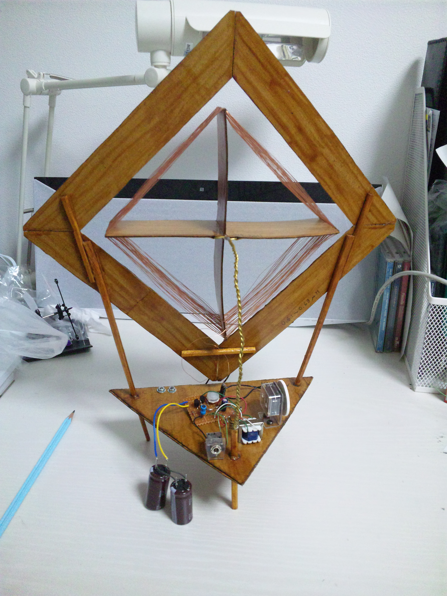
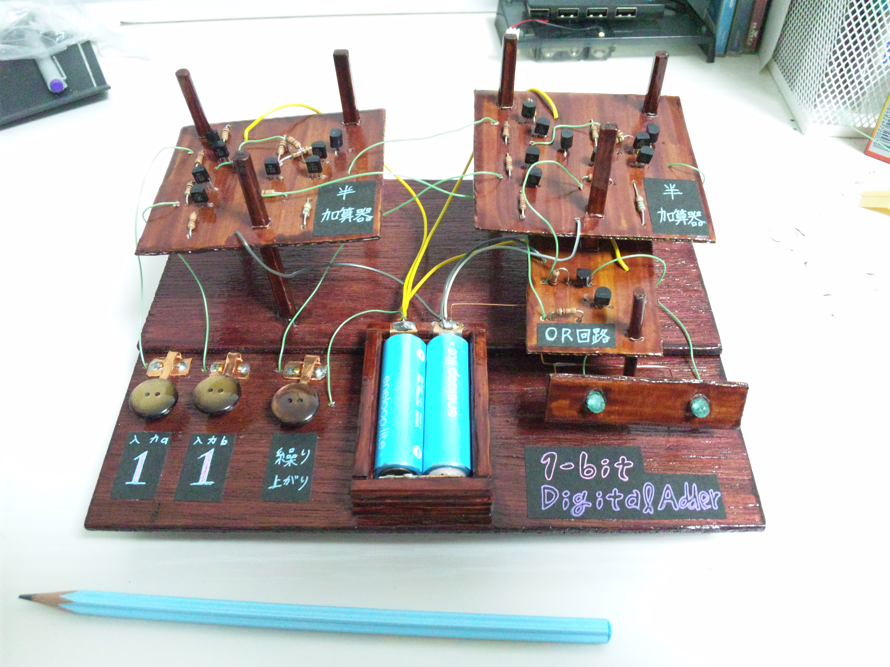
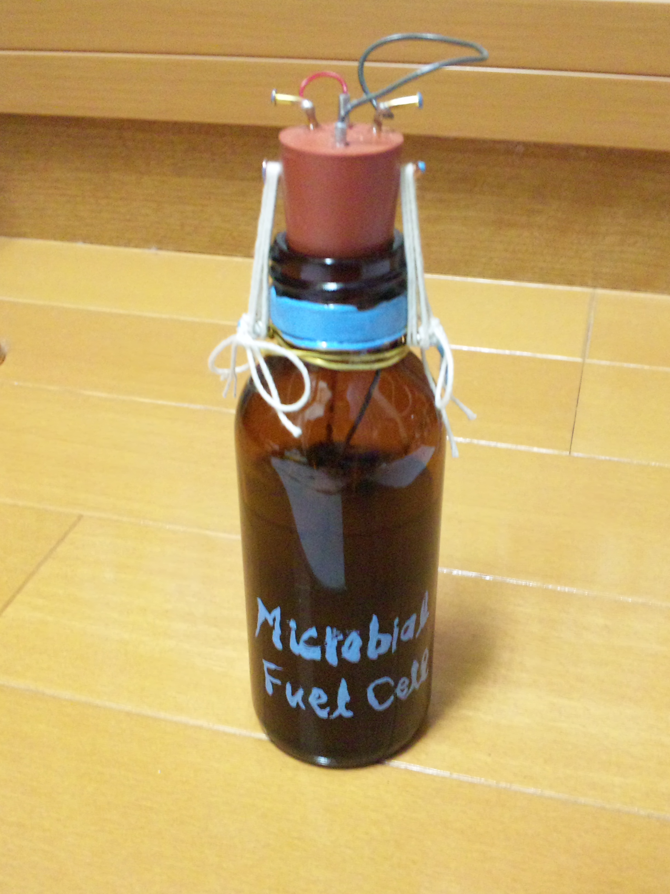
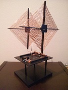
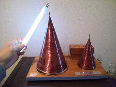
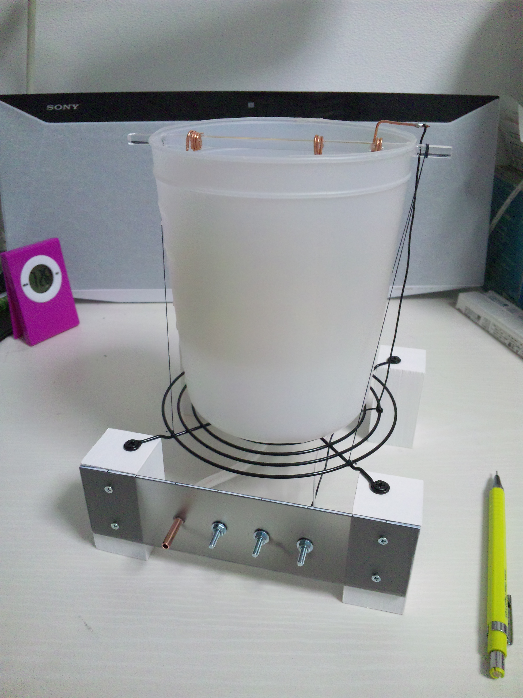
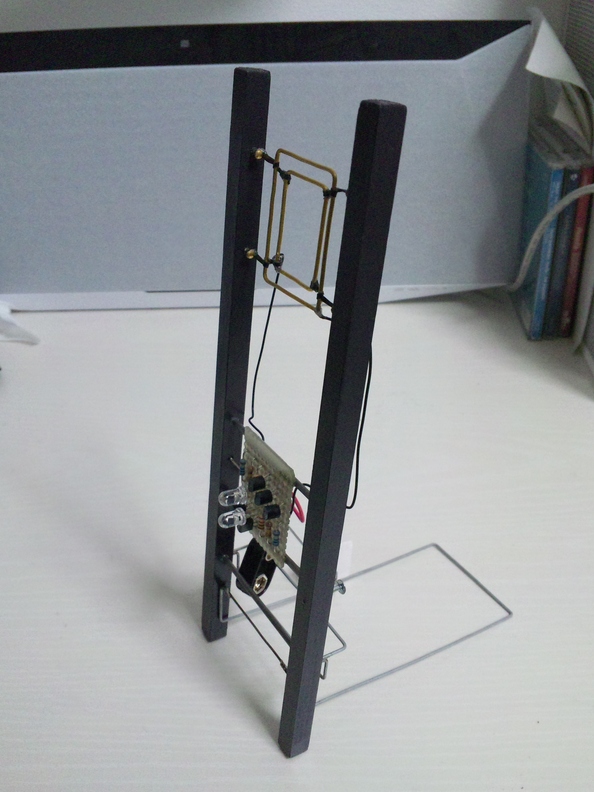

製作者
電波で発電(試作機)
AMラジオ波から電気を作り出す装置です。
発電した電気で、デジタル時計やミュージックICを動作させることに成功しました。
 |
１ビット全加算器
割りばし、段ボールなどを用いて作った、コンピューターの原理回路です。
この回路を３２個つなげると、ノートパソコンと同等の演算能力になります。
回路そのものは、バイポーラトランジスタで構成した、オリジナル設計です。
 |
バイオ燃料電池
嫌気性微生物の代謝反応から直接、電子を取り出して電気を起こす電池です。
ガラス瓶の中に土と備長炭電極が入っています。
土の養分がなくならない限り、発電がつづきます。
 |
レクテナ・インダクティカ
ラジオ電波から無料で電気を収穫する、電波発電機「レクテナ」。
相互誘導、自己誘導、電磁波による誘導起電力を併用する、オリジナル設計です。
「インダクティカ」は「電磁誘導」の意味をこめています。
|
電波で発電(試作機)
AMラジオ波から電気を作り出す装置です。
発電した電気で、デジタル時計やミュージックICを動作させることに成功しました。
 |
自励発振コイル
円錐形のコイルから、高周波エネルギーを発出する装置です。
蛍光灯やネオン管を手で持って近づけると、光ります。
本来の用途は、二酸化炭素を有機物に変換するオリジナル実験のための、エネルギー源です。
 |
水渦直接発電
タービンや水車を使わない、オリジナル新型水力発電です。
以前、渦巻きの内と外に電極を挿入すると、電気が起きる現象を偶然見つけました。
それを応用したもので、電力は弱いものの、１００Vの電圧が得られます。
 |
静電気検出器
静電気の電場を受け、トランジスタ３段で増幅、検出する装置です。
極性判別機能を持ち、プラスでは橙色、マイナスでは青のLEDが光ります。
エレクトレットや積乱雲の帯電電荷の検出のために制作しました。
 |
- このサイトはリンクフリーです - You can link to this website freely.
- コンテンツの著作権は OUCRC に帰属します - All rights of the entire contents are reserved to OUCRC.